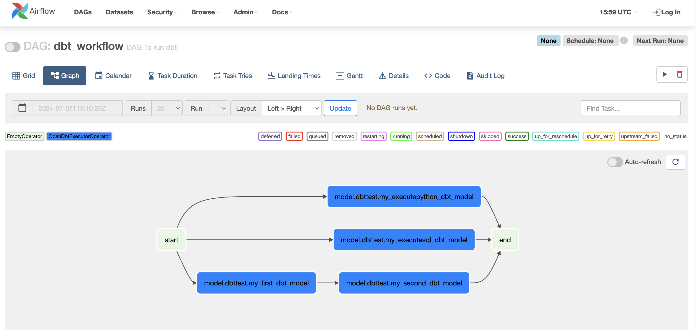
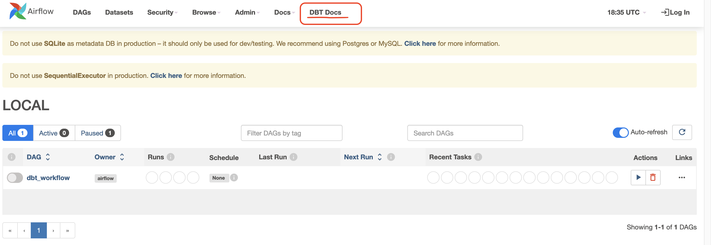
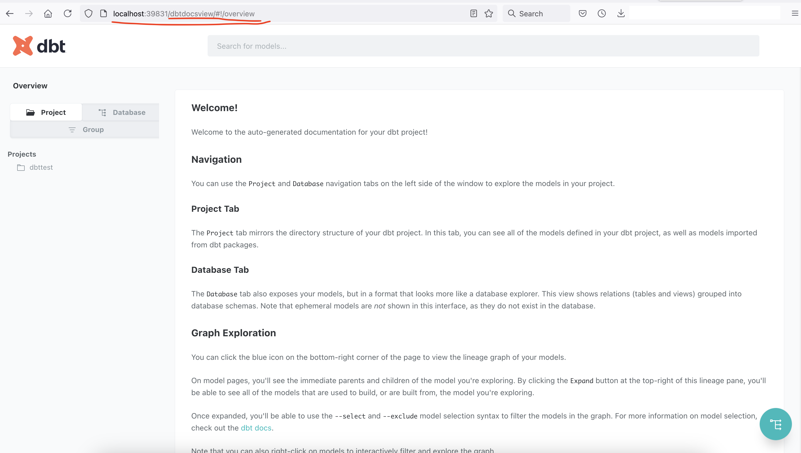

Examples
Using dbt with User-Defined Adapters and Jinja Methods
To add custom methods to an existing adapter and expose them to Jinja templates, follow these steps:
Step-1: Extend the Adapter Create a new adapter class that inherits from the desired base adapter. Add the necessary methods to this class. https://github.com/memiiso/opendbt/blob/a5a7a598a3e4f04e184b38257578279473d78cfc/opendbt/examples.py#L10-L26
Step-2: In your dbt_project.yml file, set the dbt_custom_adapter variable to the fully qualified name of your
custom adapter class. This will enable opendbt to recognize activate your adapter.
Step-3: Execute dbt commands as usual. dbt will now load and utilize your custom adapter class, allowing you to access the newly defined methods within your Jinja macros.
from opendbt import OpenDbtProject
dp = OpenDbtProject(project_dir="/dbt/project_dir", profiles_dir="/dbt/profiles_dir")
dp.run(command="run")
Executing Python Models Locally with dbt
By leveraging a customized adapter and a custom materialization, dbt can be extended to execute Python code locally. This powerful capability is particularly useful for scenarios involving data ingestion from external APIs, enabling seamless integration within the dbt framework.
Step-1: We'll extend an existing adapter (like DuckDBAdapter) to add a new method, submit_local_python_job. This
method will execute the provided Python code as a subprocess.
https://github.com/memiiso/opendbt/blob/a5a7a598a3e4f04e184b38257578279473d78cfc/opendbt/examples.py#L10-L26
Step-2: Create a new materialization named executepython. This materialization will call the newly added
submit_local_python_job method from the custom adapter to execute the compiled Python code.
https://github.com/memiiso/opendbt/blob/a5a7a598a3e4f04e184b38257578279473d78cfc/opendbt/macros/executepython.sql#L1-L26
Step-3: Let's create a sample Python model that will be executed locally by dbt using the executepython materialization. https://github.com/memiiso/opendbt/blob/a5a7a598a3e4f04e184b38257578279473d78cfc/tests/resources/dbttest/models/my_executepython_dbt_model.py#L1-L22
Orchestrating dbt Models with Airflow
Step-1: Let's create an Airflow DAG to orchestrate the execution of your dbt project. https://github.com/memiiso/opendbt/blob/a5a7a598a3e4f04e184b38257578279473d78cfc/tests/resources/airflow/dags/dbt_workflow.py#L17-L32

Creating Airflow DAG that selectively executes a specific subset of models from your dbt project.
from opendbt.airflow import OpenDbtAirflowProject
# create dbt build tasks for models with given tag
p = OpenDbtAirflowProject(resource_type='model', project_dir="/dbt/project_dir", profiles_dir="/dbt/profiles_dir",
target='dev', tag="MY_TAG")
p.load_dbt_tasks(dag=dag, start_node=start, end_node=end)
Creating dag to run dbt tests
from opendbt.airflow import OpenDbtAirflowProject
# create dbt test tasks with given model tag
p = OpenDbtAirflowProject(resource_type='test', project_dir="/dbt/project_dir", profiles_dir="/dbt/profiles_dir",
target='dev', tag="MY_TAG")
p.load_dbt_tasks(dag=dag, start_node=start, end_node=end)
Integrating dbt Documentation into Airflow
Airflow, a powerful workflow orchestration tool, can be leveraged to streamline not only dbt execution but also dbt documentation access. By integrating dbt documentation into your Airflow interface, you can centralize your data engineering resources and improve team collaboration.
here is how:
Step-1: Create python file. Navigate to your Airflow's {airflow}/plugins directory.
Create a new Python file and name it appropriately, such as dbt_docs_plugin.py. Add following code to
dbt_docs_plugin.py file.
Ensure that the specified path accurately points to the folder where your dbt project generates its documentation.
https://github.com/memiiso/opendbt/blob/a5a7a598a3e4f04e184b38257578279473d78cfc/tests/resources/airflow/plugins/airflow_dbtdocs_page.py#L1-L6
Step-2: Restart Airflow to activate the plugin. Once the restart is complete, you should see a new link labeled
DBT Docs within your Airflow web interface. This link will provide access to your dbt documentation.

Step-3: Click on the DBT Docs link to open your dbt documentation.
